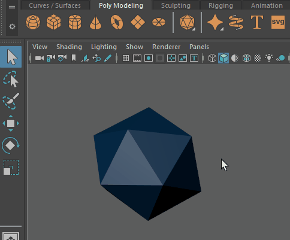

“调整模式”(Tweak Mode)允许您变换组件而不使用操纵器
“调整模式”(Tweak mode)允许您在“移动”(Move) 、“旋转”(Rotate) 或“缩放”(Scale)  模式下变换组件（面、边、顶点），而无需拖动工具操纵器。它有助于在场景中定位对象或对特定网格进行快速调整。
模式下变换组件（面、边、顶点），而无需拖动工具操纵器。它有助于在场景中定位对象或对特定网格进行快速调整。
“调整模式”(Tweak mode)与所有组件类型兼容。
在调整模式下变换组件
“调整模式”(Tweak Mode)允许您变换组件而不使用操纵器
“调整模式”(Tweak mode)允许您在“移动”(Move) 、“旋转”(Rotate) 或“缩放”(Scale) 模式下变换组件（面、边、顶点），而无需拖动工具操纵器。它有助于在场景中定位对象或对特定网格进行快速调整。
“调整模式”(Tweak mode)与所有组件类型兼容。
在调整模式下变换组件